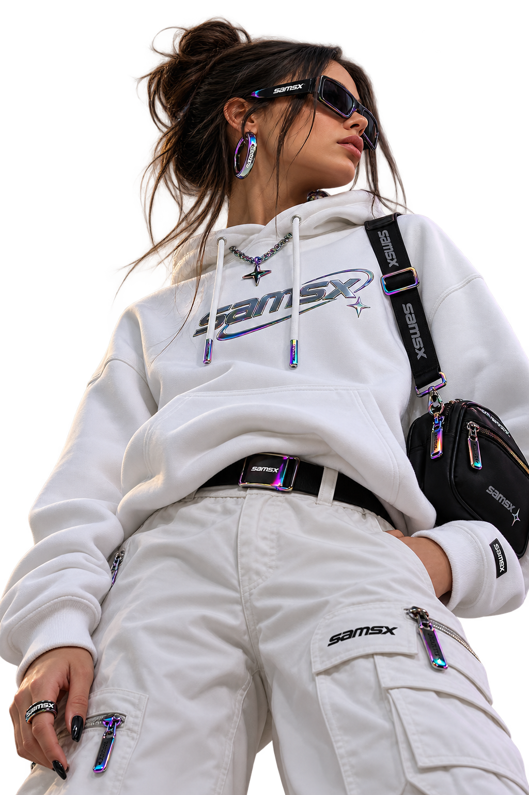

FELIPE FÉLIX / WHOAMI
BEHIND THE
SIGNAL.
Analista de cibersegurança, pesquisador e estudante de Redes de Computadores.
MINHA TRAJETÓRIA
FROM CURIOSITY
TO SECURITY.
Sou Felipe Félix. Comecei na tecnologia durante a pandemia, estudando redes de computadores e manutenção de hardware. Hoje atuo como analista de cibersegurança, curso Redes de Computadores e sigo aprofundando minha formação em segurança ofensiva.
Meu foco está em pentest de redes e infraestrutura, segurança de satélites e desafios CTF. Também integro o staff da comunidade Alquymia, onde contribuo com educação e compartilhamento de conhecimento.
Estou em preparação para a certificação DCPT, conectando estudo, prática e pesquisa em cada projeto.
EXPLORAR MINHAS PESQUISAS ↗
LEARN / TEST / SHARESKILL MATRIX
TECHNICAL FOCUS.
Áreas que orientam meus estudos, projetos e pesquisas.
OFFENSIVE SECURITY
- Penetration Testing
- Exploit Development
- Social Engineering
SPECIALIZED DOMAINS
- Satellite Security
- Network Analysis
- SCADA / ICS Security
PROGRAMMING
- Python
- C / C++
- Bash / PowerShell
CTF / BLUE TEAM
PRACTICE SHARPENS THE METHOD.
Conquistei o primeiro lugar no CTF Menina de CyberSec em 2024 e o terceiro lugar no ranking nacional CyberDefenders em 2023.